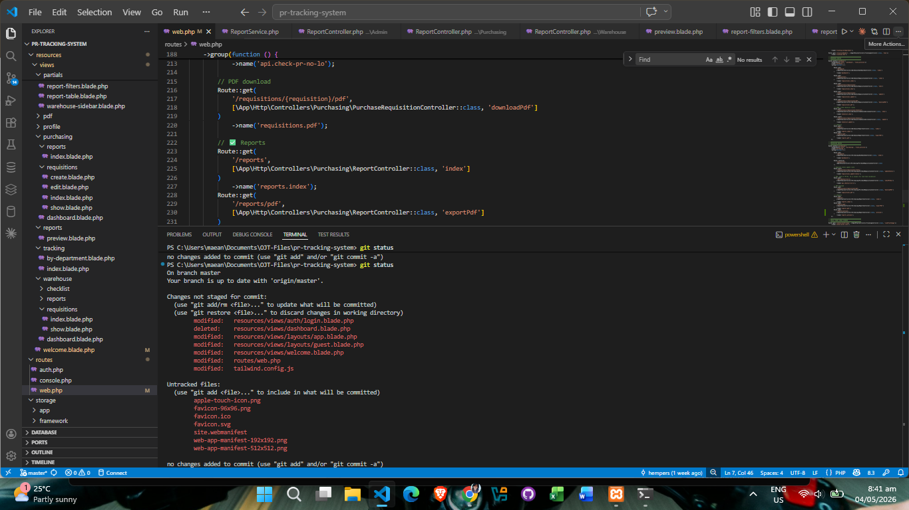
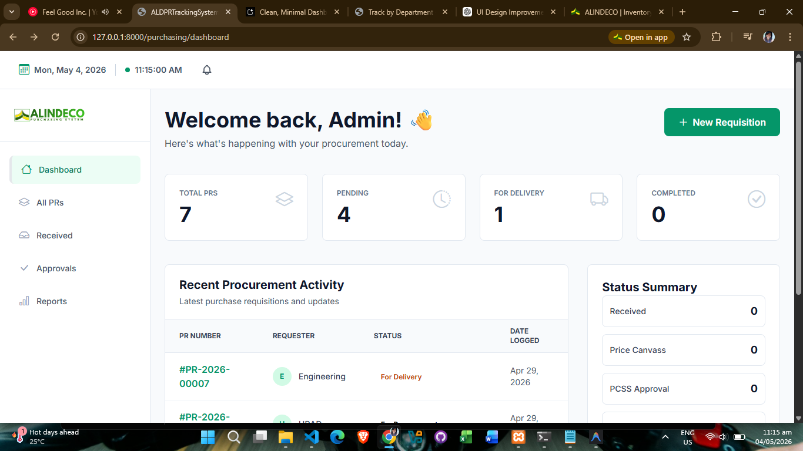
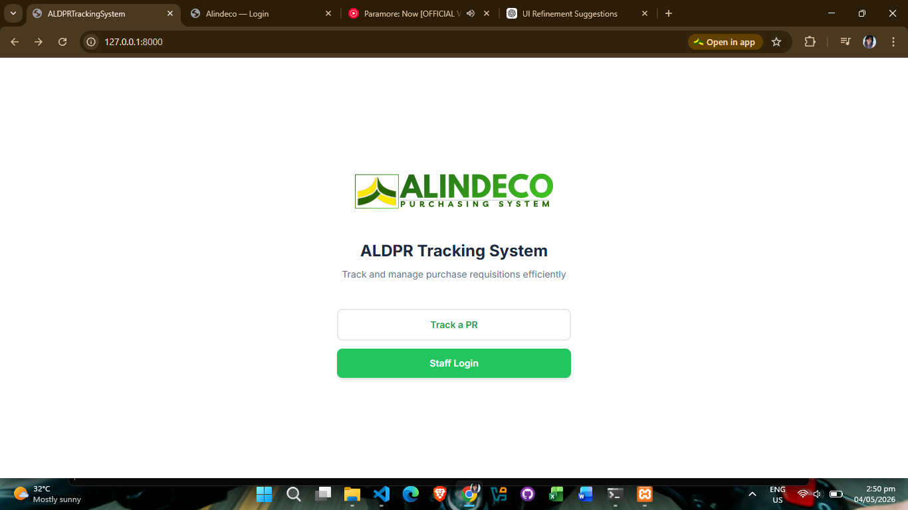
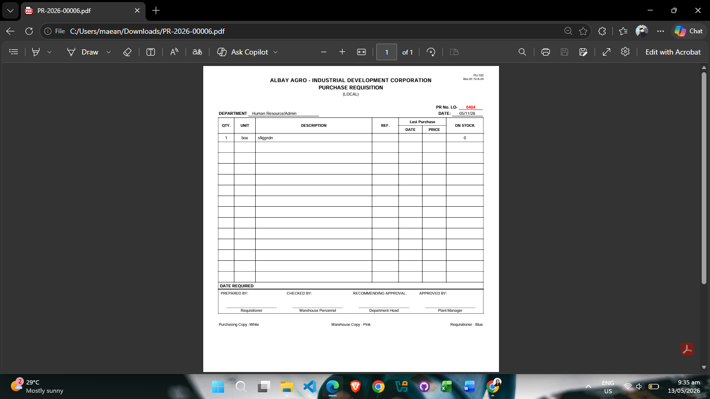
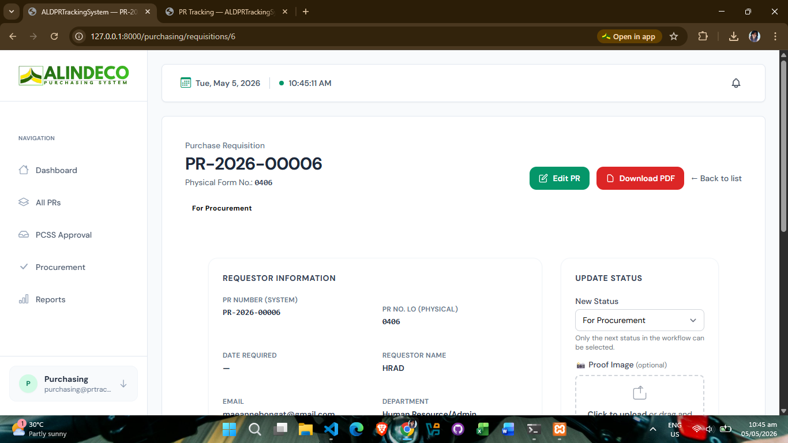
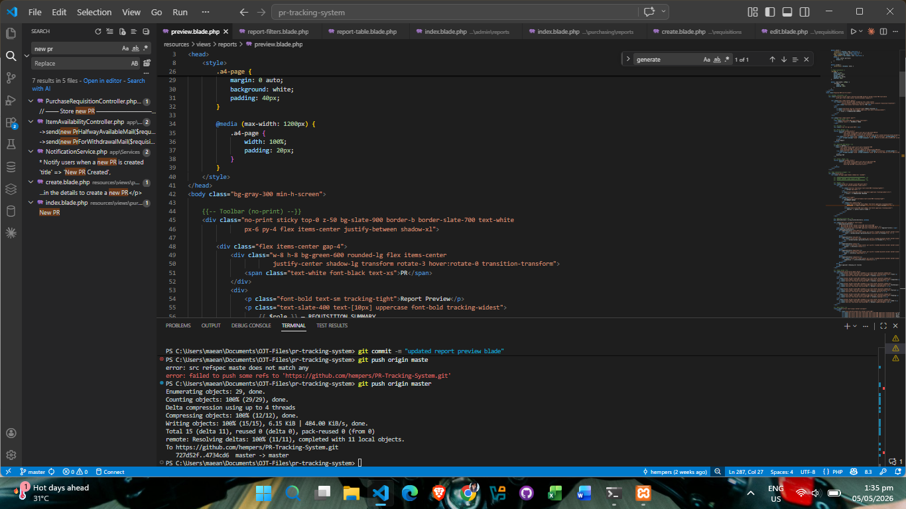
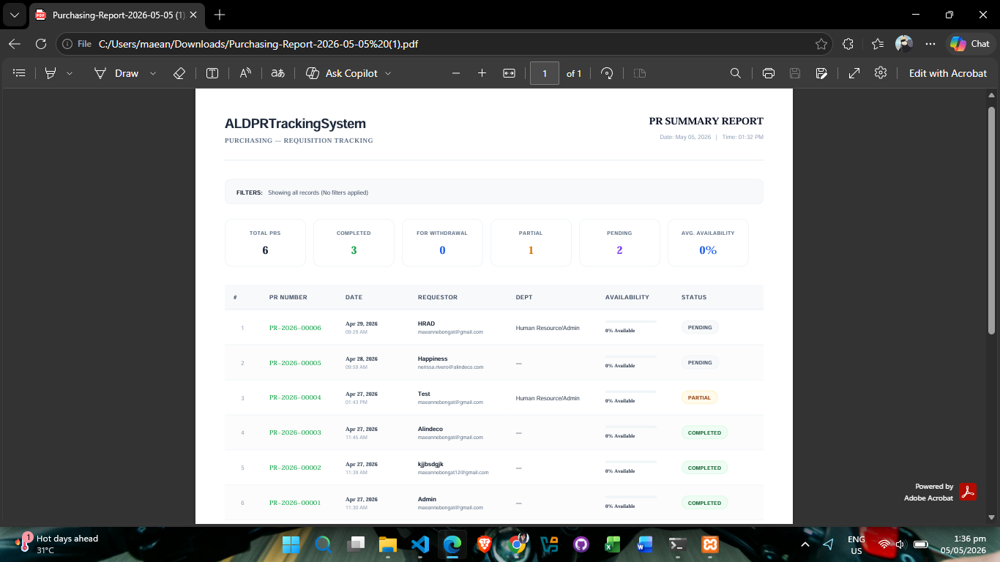
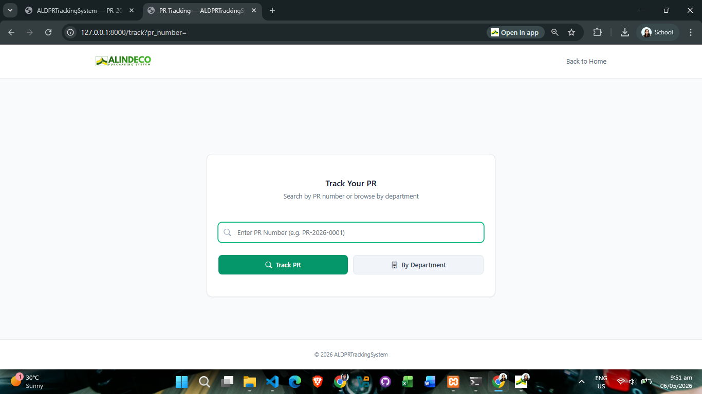
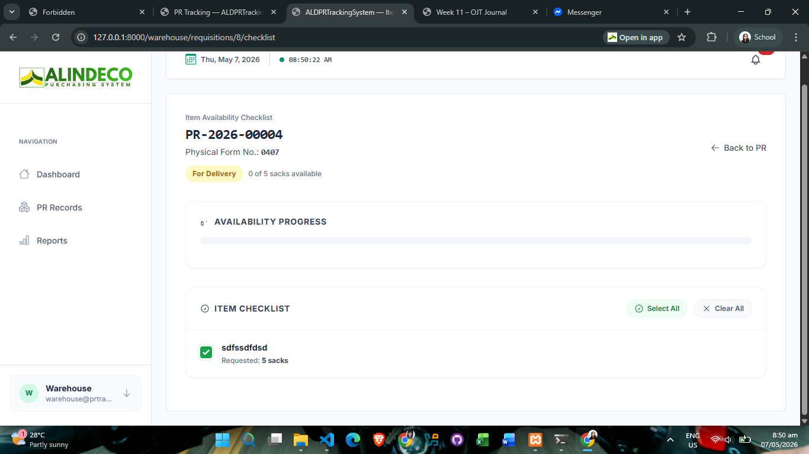
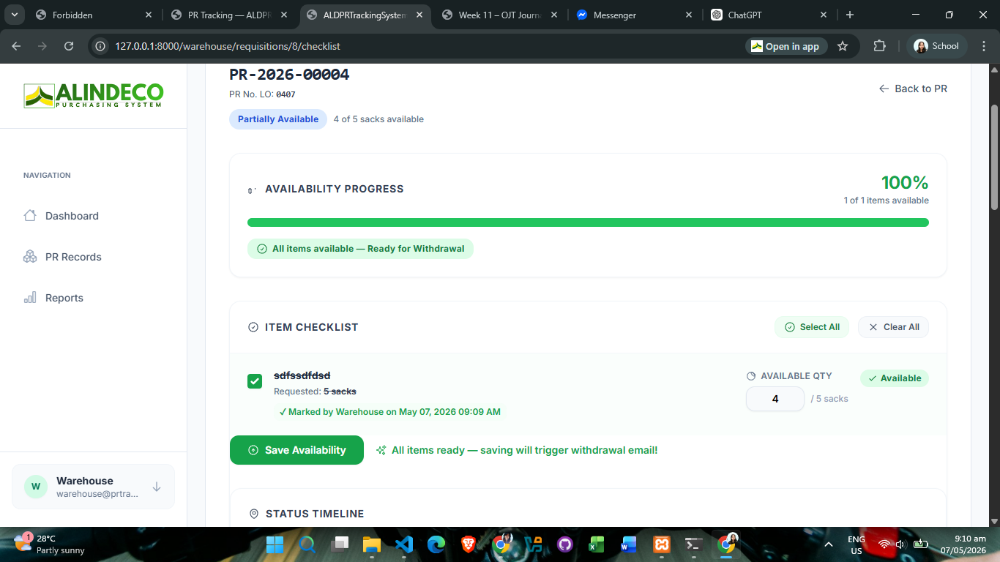

Narrative
Week 12 began with continued development on the PRT System (Purchase Request Tracking System). May 4 and 5 were dedicated to refinement and feature enhancement of the system, building upon the progress made in previous weeks.
On May 6, 2026, I shifted focus to hands-on infrastructure and equipment maintenance work. I created a LAN cable for the CCTV and NVR (Network Video Recorder) system, then proceeded to install a new monitor for CCTV monitoring in the production office, improving the surveillance capabilities and allowing real-time facility monitoring.
In the afternoon, I tackled printer maintenance by resetting the Epson L120 printer's waste ink pad counter. Following this, I assembled a newly purchased Epson L121 printer and installed it for Ms. Susan Clerigo, as her HP DeskJet Ink Advantage 3635 had become irreparable and was no longer worth servicing.





Upon installation, an error occurred during ink initialization. To resolve this issue, we removed the printer's connection from the system unit, pressed the stop button for 3 seconds, and then waited for 20 minutes to allow the ink initialization process to complete. This procedure is critical for ensuring the printer's internal ink system is properly configured and ready for operation.
On May 7, 2026, I verified that the Epson L121 printer had successfully completed its initialization. After confirming the initialization was successful, I installed the printer at Ms. Susan's workstation and performed a test print to ensure there were no printing errors. The test print was successful, confirming that the printer was fully operational and ready for daily use. Upon completing the printer installation, I proceeded to work on UI modifications for the PRT System, continuing the development efforts from earlier in the week.





May 8 proved to be the most memorable day of my entire internship. The morning was dedicated to UI refinement of the PRT System. In the afternoon, our mentor Sir Jhong introduced me to an advanced and challenging technical skill: fiber optic splicing. Fiber optic splicing is the process of joining two fiber optic cables end-to-end to create a continuous optical path for high-speed data transmission.
Despite multiple initial attempts, we persisted through the learning curve and eventually achieved a perfect splice. The most challenging aspect was inserting the fiber optic cable into the SC connector, which requires precision alignment and extremely careful handling. After numerous trials and adjustments, we successfully executed a flawless splice.
To validate our work and ensure the splice was functional, I connected the fiber optic splice to a media converter, plugged in a LAN connection from the switch to the media converter, then connected from the media converter to a computer. The test was successful — the fiber optic connection worked perfectly on the first try! This was both a challenging and rewarding experience, representing a new and valuable skill acquired during the internship. The hands-on practice demonstrated how fiber optic splicing, while technically demanding, is essential for establishing high-speed, long-distance network connections in modern IT infrastructure.